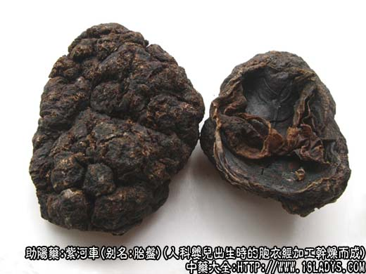
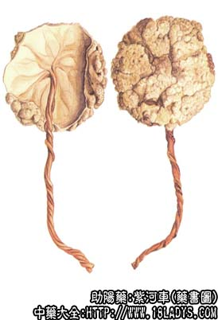

紫河车为较常用中药。始载《本草拾遗》，原名“人胞”。
别名：胎盘、胞衣。
来源：为人科婴儿出生时所脱掉的胞衣经放净瘀血加工干燥而成。
产地：全国各地妇产院均可收集。
性状鉴别：完整的加工品呈不规则的碟片状，直径9～16厘米，厚约1～2厘米。黄白色或紫黑色。外面凹凸不平，有多数沟纹，形似海绵状；内面较平坦，边缘向内卷曲，在中部或一侧附有脐带的残留。有脐带处向四周散射出许多血管分枝。体较轻，质硬脆而疏松。易折碎，断面黄色或棕色，并杂有白色块粒，有特异的血腥气，味甘咸。
以个大完整，色淡黄，质疏松者为佳。
主要成分：含有卵巢激素、黄体激素、乙酰氨基葡萄糖、右旋半乳糖、甘露糖、多种氨基酸。
功效与作用：益气、养血、补精、有强壮作用。又胎盘提出物能刺激子宫收缩、促进乳腺和女性生殖器官发育的作用，能增强机体抵抗力，还有免疫及抗过敏的作用。胎盘粉对实验性结核病有一定疗效。
炮制：轧粉生用。
性味：甘、咸、温。
归经：入肝、肾经。
功能：补气、养血、益精。
主治：虚损、赢瘦、咳血气喘、劳热骨蒸、遗精、不孕等症。
临床应用：本品历来作为强壮药用，治各种劳损和虚弱，尤其气虚、血虚、咳喘。现代主要用于治疗肺结核、肾经衰弱、贫血、支气管哮喘、老年慢性气管炎等，但要长期服用才有效。
一般以单用为主，没人2～3次，每次重复胎盘粉3～4.5g，大剂用至每次6～9g（如治疗再生障碍性贫血），或用鲜胎盘半个水煎服，每周2～3次，也可用胎盘注射液肌注。
对贫血患者，用胎盘粉1.5g配党参末3g冲服，每日3次，效果亦好。
用量：粉剂每次1.5～9g，入煎剂鲜品半个～1个。
处方举例：河车大造丸（成药）：含紫河车、肉苁蓉、熟地、生地、天冬、黄柏、五味子、锁阳、当归、杞子、杜仲，早晚各服9g，空腹白开水送下。
注：现天津使用提出胎盘球蛋白后的剩余物，称为红胎盘代紫河车药用。